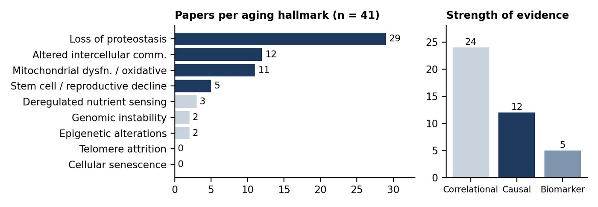

Stress-Response Genes and the Hallmarks of Aging in Arthropods
Executive summary of a structured literature review · Capstone research project
Analyst: Chi Leong Andy Fu · The University of Hong Kong
| 41 | papers coded |
| 22 | species across crustaceans, insects and arachnids |
| 51% | of papers study HSP70 |
| 29% | directly measure lifespan or age-related change |
| 2 | papers causally link a gene to longevity |
Bottom line
Arthropods offer a rich literature on how stress-response genes, above all heat shock proteins, help animals survive heat, infection, toxins and poor diets. But most of that literature links to aging only by inference.
Fewer than a third of the 41 papers measure aging directly, and only two manipulate a gene and then show a change in longevity. The field is well placed to test whether declining stress-response capacity drives aging in invertebrates, yet that test has mostly not been run.
Scope and approach
Each paper was coded into a structured database recording species, stress type, genes studied, gene function, experimental method, key findings, and the hallmark(s) of aging it bears on, using the López-Otín hallmarks framework.
The database was then cleaned: category labels were standardised, a duplicated species synonym was merged, and multi-valued fields were split so they could be counted. Three derived fields were added to support synthesis:
- Gene family groups the genes (for example HSP70, HSP90, small HSPs, HSF1, antioxidant enzymes).
- Evidence type grades each paper as causal (knockdown, silencing, recombinant protein), correlational (expression change only) or physiological biomarker.
- Direct aging measure records whether the paper itself measures lifespan or age-related change, rather than the link being argued by the reviewer.
Key findings
1. The evidence base is concentrated on one pathway
HSP70 appears in 21 of 41 papers, and loss of proteostasis is the hallmark in 29 (71%). Mitochondrial dysfunction / oxidative stress (11) and altered intercellular communication, mostly immune function (12), follow. Genomic instability, epigenetic change and nutrient sensing have two or three papers each; telomere attrition and cellular senescence are absent entirely.
2. The link to aging is mostly inferred, not measured
58% of papers are correlational, typically reporting that a stress gene is upregulated under a challenge. Only 12 papers measure aging directly. The two that combine a genetic manipulation with a longevity readout are:
- ArHsp40 knockdown in brine shrimp (Artemia franciscana), which shortened lifespan
- Loss of HSF-1 in the copepod Tigriopus californicus, which accelerated aging
3. Two literatures that rarely meet
An older physiological literature in flies measures aging directly — lifespan, lipid peroxidation, age pigments, rate-of-living — but studies few genes. A newer molecular literature, dominated by Artemia and farmed crustaceans (12 papers from aquaculture species), studies genes in depth but seldom follows animals across their lifespan.
4. HSF1 stands out as a mechanistic lead
In Daphnia, the short-lived species loses its ability to induce Hsp70 by mid-life while the long-lived species keeps it, and this tracks a decline in HSF-1 DNA binding. Together with the two causal HSF1 studies, this points to reduced stress-response inducibility, not simply lower gene expression, as the variable most worth testing.
5. Hormesis recurs across very different systems
Mild non-lethal heat shock protects shrimp against Vibrio and white spot virus through HSP70/HSP90, and low-dose radiation extends fruit fly lifespan through HSP and DNA-repair pathways. Dietary supplements in aquaculture that raise HSP70 and SOD fit the same pattern of mild stress priming resilience.

Figure 1. Left: coverage of aging hallmarks (a paper can map to several; telomere attrition and cellular senescence shown for reference). Right: papers by strength of evidence.
The dataset behind it
The review ships as a six-sheet workbook rather than a reading list, so the counts above can be checked and re-cut:
| Sheet | What it holds |
|---|---|
| Cleaned_DB | One row per paper, cleaned text plus derived tags — taxon, research context, gene family, evidence type, direct aging measure |
| Flags | 0/1 indicator columns for every multi-valued field (stress types, hallmarks, gene families), so papers tagged with several categories count correctly |
| Summary | Counts by taxon, context, gene family, stress type, hallmark, method and evidence type — live formulas reading from Flags |
| Evidence_Map | Stress type × aging hallmark matrix, showing where evidence clusters and where the gaps are |
| Data_QA | Every correction made to the original sheet, and the items that still need a manual decision |
The Data_QA sheet is the part I would point a reader at first. It logs each fix and its justification — four papers where Litopenaeus vannamei and Penaeus vannamei were counted as separate species, malformed gene entries, stray characters in category labels — alongside three papers whose hallmark labels were non-standard and are flagged as Unmapped rather than quietly forced into a category. It also records what could not be fixed: the source sheet carries no year, author, journal or DOI columns, which is why trends over time are not analysed here.
Gaps and recommended next steps
Close the causal gap. The strongest next study would combine gene knockdown (HSP70, HSP40 or HSF1) with a full lifespan assay in a tractable species such as Artemia, where RNAi already works and diapause offers a natural model of arrested aging.
Measure inducibility over age. Repeating the Daphnia design — testing stress-response induction in young versus old animals — in other taxa would show whether loss of inducibility is general.
Broaden the hallmarks. Genomic, epigenetic and nutrient-sensing mechanisms are barely covered; the one transgenerational epigenetic study (phloroglucinol in Artemia) suggests this is a productive direction.
Use aquaculture data. Priming and diet trials in farmed species already generate stress-gene data; adding survival-over-time endpoints would make them informative for aging research.
Limitations
The review covers 41 papers and is weighted toward crustaceans (54%). Hallmark assignments, evidence grades and the direct-aging flag are reviewer judgements, and three papers carry non-standard hallmark labels still to be resolved.
Counts describe the coded literature, not effect sizes, and publication year was not recorded, so trends over time cannot yet be assessed.